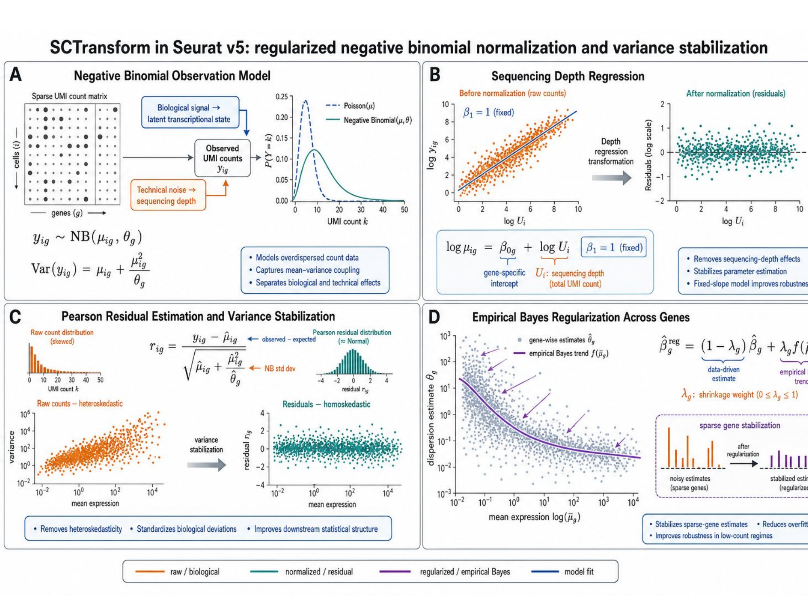
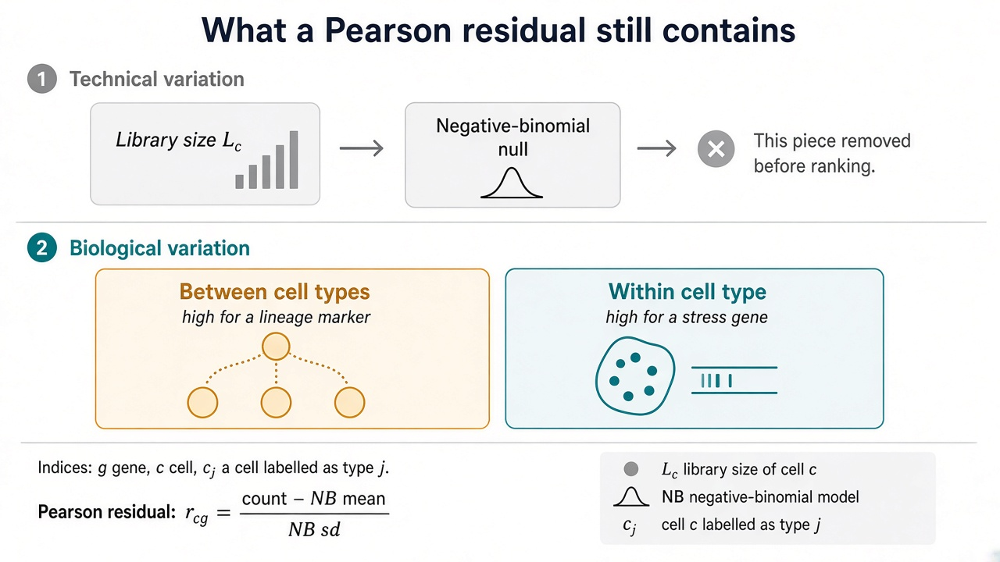
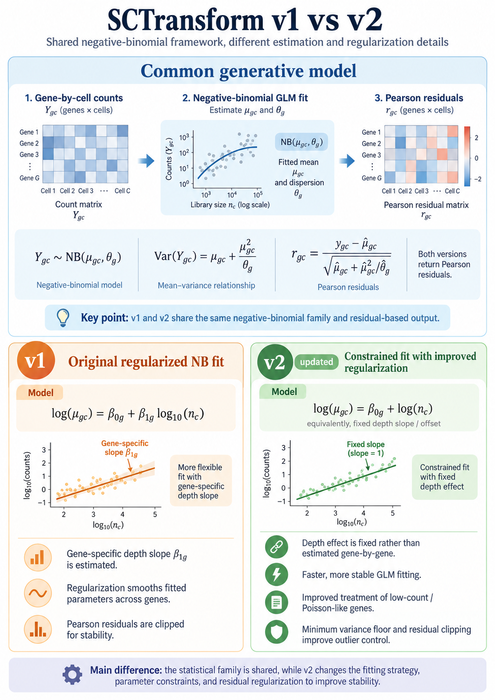

%%{init: {"theme": "sandstone", "flowchart": {"htmlLabels": true}}}%%
flowchart TD
A["UMI y_cg, labels j"] --> B["Technical NB null, library size only"]
B --> C["Pearson residuals r_cg"]
C --> D["Rank by between versus within type"]
E["Knowledge markers"] --> F["Gene universe G_0"]
D --> F
F --> G["GGM chapter"]
3 Naive gene screen
3.1 Building \mathcal{G}_{0}
This chapter builds a working universe \mathcal{G}_{0} on which a GGM can be estimated. Genes are scored from one labelled single-cell reference, used as a signature, not from a multi-sample atlas. Global ranks (highly variable genes) and a short knowledge-driven marker list both remove genes from the whole transcriptome. The all-versus-all refinement that uses \boldsymbol{\Omega}_{j} comes after GRN inference (Section 7.1).
Notation: gene g=1,\ldots,G; cell type j=1,\ldots,J; cell c=1,\ldots,C. A cell labelled as type j is written c_{j}. Bulk samples stay indexed by i, as in the article. The DeCovarT convolution is linear in \boldsymbol{p} only on an additive scale (Note 3.1).
Important 3.1: ⚠️ Keep the mixture on a linear scale
The convolution \boldsymbol{y}\mid(\boldsymbol{\zeta},\boldsymbol{p})\sim\mathcal{N}_{G}(\boldsymbol{\mu}\boldsymbol{p},\sum_{j}p_{j}^{2}\boldsymbol{\Sigma}_{j}) is linear in \boldsymbol{p} only if \boldsymbol{\mu} and \boldsymbol{y} live on the same additive scale (counts, CPM, or TPM). Logarithms, SCTransform Pearson residuals, and nonparanormal scores break that map (Sturm et al. 2019; Jin and Liu 2021; Hoffmann et al. 2006). Use residualisation only to rank genes; export DeCovarT moments on the linear scale. Non-affine maps (logarithms, Pearson residuals, nonparanormal scores) change the estimand by Jensen’s inequality.
3.2 Highly variable genes as a signal-to-noise rank
Single-cell UMI tables mix depth noise with biological heterogeneity. Regularised negative-binomial regression in sctransform (Hafemeister et al. 2025) / Seurat::SCTransform separates the two via Pearson residuals (Hafemeister and Satija 2019). We use that transform only to rank genes, not to normalise the table that enters glasso or PLN, and not as a factorial arm of the GRN design (Section 4.2).
On this single-cell reference the only technical covariate we actually have is library size. There is a single scRNA-seq resource, so batch, donor and unmeasured technical branches cannot be identified (Hafemeister and Satija 2019). The technical null is therefore
\log\mu_{cg} = \beta_{0g} + \operatorname{offset}(\log L_{c}), \qquad y_{cg}\sim\mathrm{NB}(\mu_{cg},\theta_{g}), \tag{3.1}
with L_{c} the library size of cell c. Do not put cell type j in this null: that would remove the between-type signal the panel is meant to keep.
Pearson residuals are
r_{cg} = \frac{y_{cg}-\hat{\mu}_{cg}} {\sqrt{\hat{\mu}_{cg}+\hat{\mu}_{cg}^{2}/\hat{\theta}_{g}}}. \tag{3.2}
Figure 3.2 recalls the NB mean–variance relation and the residual scale used by SCTransform.

SCTransform negative-binomial mean–variance relation and Pearson residuals (Seurat v5).
3.2.1 Total, biological, and technical pieces
For gene g write V_{\mathrm{total},g}=\mathrm{Var}_{c}(r_{cg}) for residual variation after the depth null. That leftover is not pure biology: it still contains model misspecification. What we can split with the labels j is biological variation between versus within cell types,
\begin{aligned} \mathrm{SS}_{\mathrm{between},g} &= \sum_{j=1}^{J} C_{j} \bigl(\bar{r}_{gj}-\bar{r}_{g}\bigr)^{2}, \qquad \bar{r}_{gj} = C_{j}^{-1}\sum_{c_{j}}r_{c_{j}g},\\ \mathrm{SS}_{\mathrm{within},g} &= \sum_{j=1}^{J} \sum_{c_{j}} \bigl(r_{c_{j}g}-\bar{r}_{gj}\bigr)^{2}. \end{aligned} \tag{3.3}
C_{j} is the number of cells labelled j. Because the residuals are globally approximately centred, \bar{r}_{g}\approx 0 and \mathrm{SS}_{\mathrm{between},g}\approx\sum_{j}C_{j}\bar{r}_{gj}^{2}. A lineage marker (high between-type, low within-type) is the gene we want. A stress-response gene (low between-type, high within-type) is not, even if its total residual variance is large. Figure 3.3 sketches that split.

%%{init: {"theme": "sandstone", "flowchart": {"htmlLabels": true}}}%%
flowchart TD
Y["y_cg"] --> N["NB technical null: offset log L_c only"]
N --> R["Pearson r_cg"]
R --> T["Total residual variance"]
T --> B["Between type"]
T --> W["Within type"]
B --> S["Keep high between, low within"]
W --> S
There is no calibrated differential-expression p-value here: one technical replicate cannot support DESeq2 (Note 3.4). The between-type sum of squares is a ranking score.
Use Seurat::SCTransform() with Pearson residuals (vst.flavor = "v2"). That is the residual transformation used to rank genes (Note 3.2).
After SCTransform, pull the residual matrix and compute Equation 3.3 by the labelled type j. Keep on the order of 2{,}000 genes in \mathcal{G}_{0} before any GGM (Friedman et al. 2008).
# Sketch: Pearson residuals for ranking only; export counts to the GGM.
sct <- Seurat::SCTransform(
seu,
method = "glmGamPoi",
residual.feature = NULL,
return.only.var.genes = FALSE,
vst.flavor = "v2"
)
R <- Seurat::GetAssayData(sct, assay = "SCT", layer = "scale.data")
# rows gene g, columns cell c; align with cell-type factor j
j <- sct$celltype
ss_between <- apply(R, 1, function(r) {
means <- tapply(r, j, mean)
n_j <- tapply(r, j, length)
sum(n_j * means^2)
})
ss_within <- apply(R, 1, function(r) {
sum(tapply(r, j, function(z) sum((z - mean(z))^2)))
})
snr <- ss_between / pmax(ss_within, .Machine$double.eps)
Note 3.2: ℹ️
vst.flavor = "v2" still returns Pearson residuals
Both flavours of SCTransform assume Y_{cg}\sim\mathrm{NB}(\mu_{cg},\theta_{g}) and store Pearson residuals. What changes is the fit that produces \hat\mu_{cg} and \hat\theta_{g} (Figure 3.5).
In v1 the depth slope is a gene-wise coefficient,
\log\mu_{cg}=\beta_{0g}+\beta_{1g}\log_{10}(n_{c}).
In v2 that slope is fixed at \ln 10, so library size is an offset (Choudhary and Satija 2022; Lause et al. 2021):
\log\mu_{cg}=\beta_{0g}+\log n_{c}, \qquad \mu_{cg}=e^{\beta_{0g}}\,n_{c}.
Doubling the UMI depth then doubles every gene’s expected count. v2 also regularises dispersions with the glmGamPoi offset route, treats genes with no evidence of overdispersion as Poisson (\theta_{g}=\infty), and floors the Pearson denominator at a minimum variance (min_variance = "umi_median") before the separate residual clip. The ranking above uses those v2 residuals; it does not use Seurat’s variable-feature shortlist.

Note 3.3: ℹ️ HVGs are not a GGM input
Pearson residuals are closer to homoscedastic than raw UMI counts, which is why they are popular before PCA. They are still a nonlinear residualisation. Feeding them indiscriminately into SILGGM silently changes the estimand of \boldsymbol{\Omega}_{j} away from the latent Gaussian that DeCovarT wants at the population level. If a Gaussian GGM is used, prefer a copula / nonparanormal map on the same gene set (Section 4.3.2), or better a Poisson-lognormal latent Gaussian (Section 4.3.3).
3.3 Marker genes
Shannon entropy and Gini of relative means are compaction scores for long one-versus-rest lists. Definitions live in the DeCovarT vignette supp-S6-feature-selection.qmd.
On this reference the marker list is knowledge-driven and already short. It is stored as
data/dictionaries/mouse_gastruloid_signaling_markers.csv
with three columns: cell_type_excel (lineage name on the signalling map), cell_type_suppinger (the matching Suppinger label, or NA when that lineage is absent), and gene_marker. Because the list is a curated biological seed rather than a concatenated differential-expression shortlist, it does not by itself inflate collinearity of \boldsymbol{\mu}_{\mathcal{G}}. Seeds may later be grown by Markov boundaries (Section A.1).
3.4 Differential expression — only with biological replication
DESeq2, edgeR and limma–voom remain the workhorses of one-versus-rest ranking (Love et al. 2014). That logic does not transfer to GSE229513 as a DE experiment.
Warning 3.4: ⚠️ Technical pseudo-bulks are not biological replicates
Cells from a common experimental unit are not independent biological replicates. Splitting or bootstrapping cells characterises technical / sampling variability; it does not manufacture between-organoid uncertainty. Treating cells, or random partitions of cells, as DESeq2 replicates inflates apparent degrees of freedom and produces false discoveries (Squair et al. 2021; Crowell et al. 2020).
Use DESeq2 in this book only if independent biological replicates exist. For GSE229513, skip calibrated DE p-values. Rank genes by Equation 3.3 or by the knowledge table, not by a nested-model F treated as a p-value.
Bulk HTSeq tables (GSE229386) do have three biological replicates per time and Wnt schedule (Section 2.1). Those replicates support bulk DE of treatments, not cell-type GRNs from the scRNA-seq object.
3.5 What we would actually run
SCTransformPearson residuals under Equation 3.1; rank by between/within Equation 3.3.- Union with
data/dictionaries/mouse_gastruloid_signaling_markers.csv(drop rows withcell_type_suppingermissing unless a later reference needs them). - Cap |\mathcal{G}_{0}| at a few thousand genes.
- No
DESeq2p-values on technical sc pseudo-bulks.
3.6 Perspectives: differential networks
These methods are not in the naive screen. They need graphs, so they nominate extras for \mathcal{G}_{0} after a first GGM pass. Full algebraic detail of INDEED and D-trace lives in DeCovarT vignettes/supp-S6-feature-selection.qmd. Separation language (directed versus undirected) is in Section A.1.
3.6.1 Comparing supports, or estimating the difference
DeCovarT benefits from rewiring between populations. A gene that changes neighbourhood in \boldsymbol{\Omega}_{j} is a better candidate than a gene that is merely highly variable.
Fit every \boldsymbol{\Omega}_{j}, then compare supports. Independent glasso / SILGGM fits (Section 4.3.2) yield per-type edges; the symmetric difference of supports ranks genes by differential connectivity. The difference of two biased estimators is not a debiased estimator of \Delta_{j\ell}=\boldsymbol{\Omega}_{j}-\boldsymbol{\Omega}_{\ell}.
Estimate \Delta_{j\ell} directly. D-trace methods target the difference of precisions without necessarily reconstructing both graphs first. Zhang and Zou (Zhang and Zou 2014) introduced the lasso-penalised D-trace loss for a single sparse precision; the differential-network extension (Yuan et al. 2017) estimates \Delta_{j\ell}. Empirically, D-trace is competitive when the difference is sparser than either graph (Plaksienko et al. 2025). It still does not produce a pair of SPD precisions. A workable proposal is: use D-trace to nominate rewiring genes, then estimate each \boldsymbol{\Omega}_{j} on that panel with a method from Section 4.5.
3.6.2 INDEED
INDEED multiplies a DE p-value by a permutation-filtered change in partial correlation (Zuo et al. 2016). On this reference the DE p-value assumes biological replication (Note 3.4), and the permutation null among cells of one gastruloid is a technical null. Use it, if at all, as a ranking heuristic with p_{g}^{\mathrm{DE}} replaced by a fold-change or between-type score.
3.6.3 Markov boundaries
Once a GGM exists, seeds (markers, high signal-to-noise genes, D-trace hits) can be grown by undirected neighbours \{g':\omega_{gg'}\neq 0\}. On a minimal undirected I-map that neighbour set is the Markov boundary, the smallest Markov blanket (Pearl 1988; Koller and Friedman 2009). That is undirected separation, not DAG d-separation (Section A.1, Figure A.1).
Choudhary, Saket, and Rahul Satija. 2022. “Comparison and Evaluation of Statistical Error Models for scRNA-seq.” Genome Biology 23 (1): 27. https://doi.org/10.1186/s13059-021-02584-9.
Crowell, Helena L., Charlotte Soneson, Pierre-Luc Germain, et al. 2020. “Muscat Detects Subpopulation-Specific State Transitions from Multi-Sample Multi-Condition Single-Cell Transcriptomics Data.” Nature Communications 11: 6077. https://doi.org/10.1038/s41467-020-19894-4.
Friedman, Jerome, Trevor Hastie, and Robert Tibshirani. 2008. “Sparse Inverse Covariance Estimation with the Graphical Lasso.” Biostatistics (Oxford, England) 9 (3): 432–41. https://doi.org/10.1093/biostatistics/kxm045.
Hafemeister, Christoph, and Rahul Satija. 2019. “Normalization and Variance Stabilization of Single-Cell RNA-seq Data Using Regularized Negative Binomial Regression.” Genome Biology 20 (1). https://doi.org/10.1186/s13059-019-1874-1.
Hafemeister, Christoph, Rahul Satija, and Saket Choudhary. 2025. Sctransform: Variance Stabilizing Transformations for Single Cell UMI Data. https://CRAN.R-project.org/package=sctransform.
Hoffmann, Martin, Dirk Pohlers, Dirk Koczan, Hans-Jürgen Thiesen, Stefan Wölfl, and Raimund W. Kinne. 2006. “Robust Computational Reconstitution – a New Method for the Comparative Analysis of Gene Expression in Tissues and Isolated Cell Fractions.” BMC Bioinformatics 7. https://doi.org/10.1186/1471-2105-7-369.
Jin, Haijing, and Zhandong Liu. 2021. “A Benchmark for RNA-seq Deconvolution Analysis Under Dynamic Testing Environments.” Genome Biology 22. https://doi.org/10.1186/s13059-021-02290-6.
Koller, Daphne, and Nir Friedman. 2009. Probabilistic Graphical Models: Principles and Techniques. Edited by Francis Bach. MIT Press.
Lause, Jan, Philipp Berens, and Dmitry Kobak. 2021. “Analytic Pearson Residuals for Normalization of Single-Cell RNA-seq UMI Data.” Genome Biology 22 (1): 258. https://doi.org/10.1186/s13059-021-02451-7.
Love, Michael I., Wolfgang Huber, and Simon Anders. 2014. “Moderated Estimation of Fold Change and Dispersion for RNA-seq Data with DESeq2.” Genome Biology 15 (12): 550. https://doi.org/10.1186/s13059-014-0550-8.
Pearl, Judea. 1988. Probabilistic Reasoning in Intelligent Systems: Networks of Plausible Inference. Morgan Kaufmann.
Plaksienko, Anna, Magne Thoresen, and Vera Djordjilović. 2025. Methods for Differential Network Estimation: An Empirical Comparison. arXiv:2412.17922. arXiv. https://doi.org/10.48550/arXiv.2412.17922.
Squair, Jordan W., Matthieu Gautier, Claudia Kathe, et al. 2021. “Confronting False Discoveries in Single-Cell Differential Expression.” Nature Communications 12 (1). https://doi.org/10.1038/s41467-021-25960-2.
Sturm, Gregor, Francesca Finotello, Florent Petitprez, et al. 2019. “Comprehensive Evaluation of Transcriptome-Based Cell-Type Quantification Methods for Immuno-Oncology.” Bioinformatics (Oxford, England) 35. https://doi.org/10.1093/bioinformatics/btz363.
Yuan, Huili, Ruibin Xi, Chong Chen, and Minghua Deng. 2017. Differential Network Analysis via the Lasso Penalized D-Trace Loss. arXiv:1511.09188. arXiv. https://doi.org/10.48550/arXiv.1511.09188.
Zhang, Teng, and Hui Zou. 2014. “Sparse Precision Matrix Estimation via Lasso Penalized D-trace Loss.” Biometrika 101 (1): 103–20.
Zuo, Yiming, Yi Cui, Cristina Di Poto, et al. 2016. “INDEED: Integrated Differential Expression and Differential Network Analysis of Omic Data for Biomarker Discovery.” Methods (San Diego, Calif.) 111: 12–20. https://doi.org/10.1016/j.ymeth.2016.08.015.